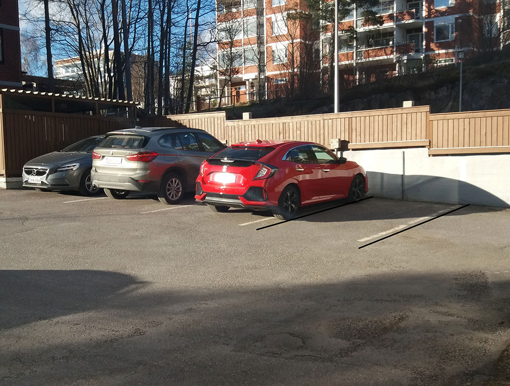
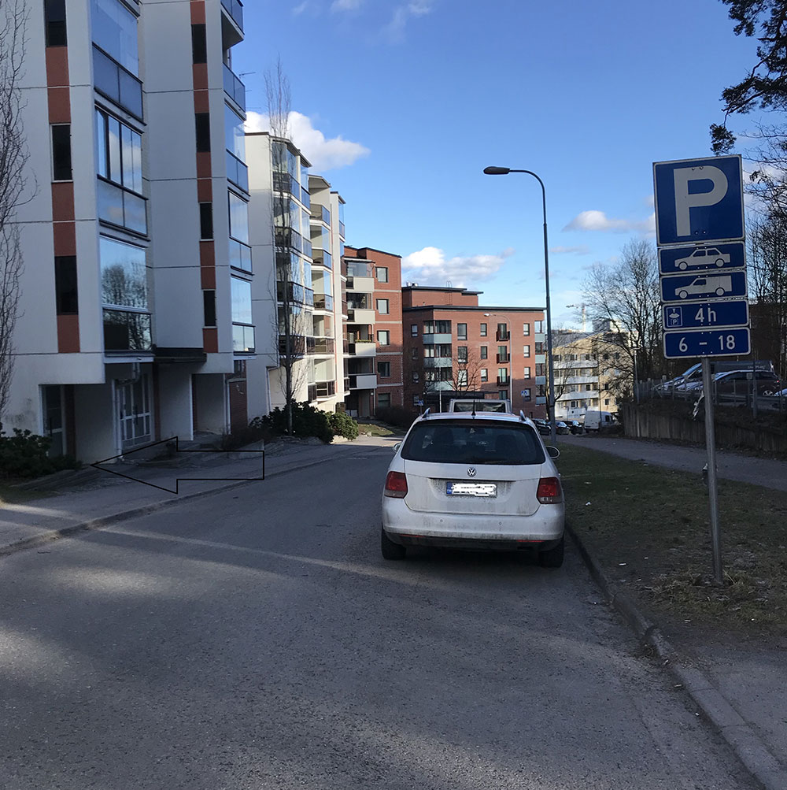

Hieronnan tai osteopatian ajanvaraus
Varatun ajan mahdollinen peruutus viimeistään edellisenä päivänä. Peruuttamattomasta ajasta peritään hinnaston mukainen maksu. Voit peruuttaa ajan tästä linkistä.
Hieronnasta
Hierojalle hakeudutaan yleensä tuki- ja liikuntaelimistön ongelmien vuoksi. Yksilöllinen hoitosuunnitelma tehdään asiakkaan kanssa käydyn keskustelun sekä havainnoinnin ja tutkimisen perusteella. Hieronnassa käytetyillä tekniikoilla on tarkoitus helpottaa akuutteja kiputiloja, palauttaa toimintakykyä, rentouttaa sekä ylläpitää kehon ja mielen hyvinvointia.
Huonot ja yksipuoliset työasennot sekä henkisesti ja fyysisesti kuormittavat työt aiheuttavat ihmisille yhä enemmän jännitys- ja kiputiloja lihaksiin etenkin niskan ja selän alueelle. Hieronta on tärkeä osa työkyvyn ylläpitämistä yhdessä säännöllisen liikunnan kanssa.
Urheiluhieronta on klassisen hieronnan soveltamista urheilijan tarpeisiin ja harjoitusrytmiin. Hieronnalla tehostetaan urheilijan palautumista, pidetään yllä suorituskykyä sekä hoidetaan jo syntyneitä tuki- ja liikuntaelinvaivoja.
Osteopatiasta
Ortopedinen osteopaatti on ennen kaikkea kliinikko, jonka erityisosaamiseen kuuluu tuki- ja liikuntaelimistön häiriötilojen syiden selvittely. Tyypillisiä oireita, joiden vuoksi osteopaatille hakeudutaan, ovat erilaiset kivut, puutumiset, jäykkyydet, huimaukset, liikehäiriöt, voimapuutokset tai fyysisten traumojen jälkeiset tilat. Vastaanotolla tapahtuvan haastattelun ja kliinisen tutkimisen perusteella tehdään hoitodiagnoosi. Hoidossa käytetään tarpeen mukaan muun muassa erilaisia teknisen hieronnan muotoja, nivelten liikkuvuuksia parantavia tekniikoita ja akupunktiota. Hoitoon olennaisesti kuuluu myös yksilöllisesti tehty harjoitusohjelma. Mikäli vaiva ei ole osteopatialla hoidettavissa, ohjataan asiakas erikoislääkärille tai tarvittaviin jatkotutkimuksiin.
Osteopaatti on terveydenhuollon ammattihenkilö, joka tukeutuu vahvasti toiminnassaan länsimaiseen lääketieteeseen ja faktoihin. Ortopedistä osteopatiaa lähellä olevia koulukuntia ovat muun muassa OMT ja Maitland fysioterapia.
- Vastaanotto on katutason liiketilassa 600 metrin kävelymatkan päässä Leppävaaran asemalta. Kadulla on 4 tunnin kiekkopaikkoja ja autopaikka numero 9 on asiakaspaikka, johon voi pysäköidä. Kauppakeskus Gallerian parkkihalli sijaitsee 450 m kävelymatkan päässä.
- 
- 